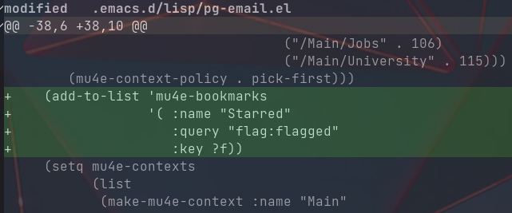
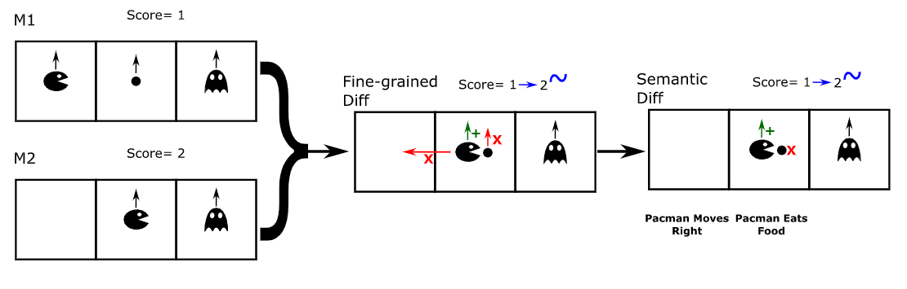
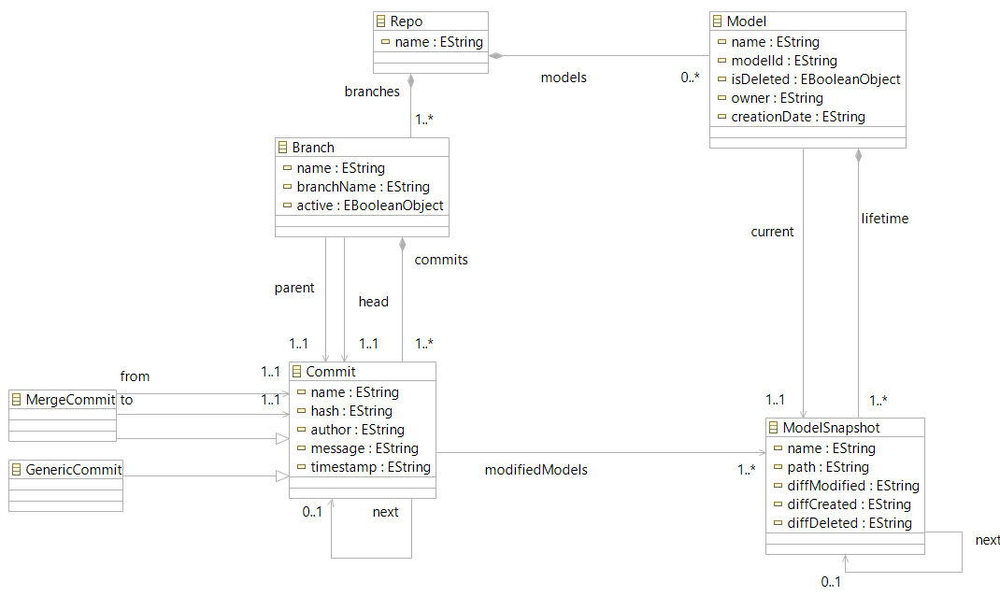
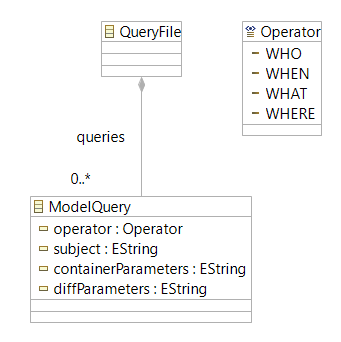
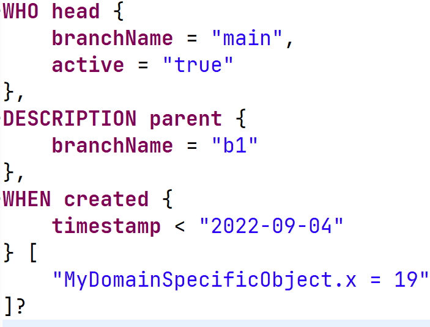
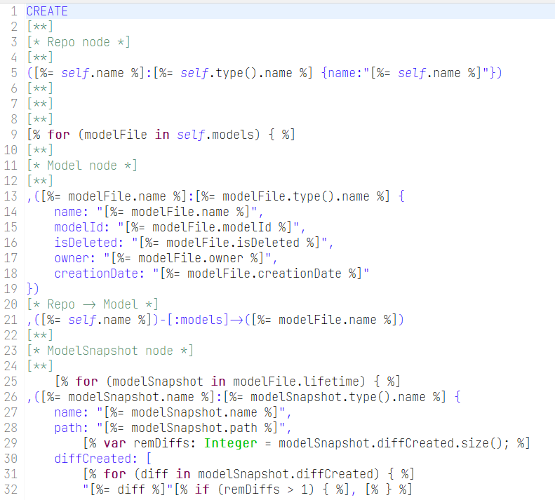
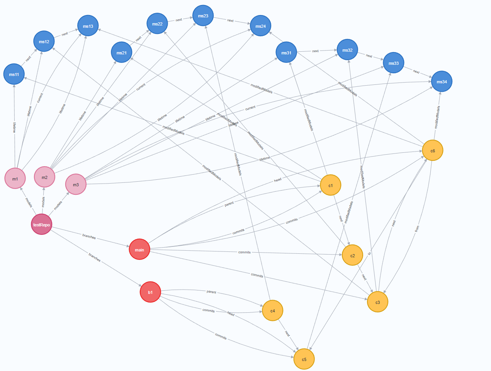
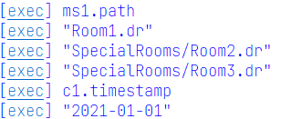

DSMCompare: domain-specific model differencing for graphical domain-specific languages by Manouchehr Zadahmad et al.
A Roadmap towards Domain-Specific Version Control Systems by Eugene Syriani and Manuel Wimmer
MQL - Une DSQL pour interroger de tels projets versionnables
| Terme | Définition |
|---|---|
| Neo4J | Système de gestion de bases de données de graphes |
| Base de données de graphes | Format de stockage en noeuds et arêtes utile pour plusieurs relations |
| Cypher | Langage de requêtes de Neo4J |
| VCS | Système responsable pour gérer les changements à une collection de donnée |
| Transformation de modèle-à-texte | Génération de fichier(s) source(s) à partir d'un modèle |
Offrir une DSQL pour interroger des projets versionnables spécifique à un domaine
Processus similaire pour stocker un Projet Versionnable sur Neo4J




<?xml version="1.0" encoding="UTF-8"?>
<project default="runQuery">
<property name="skipRepo" value="false"/>
<property name="repo" value="Repo"/>
<property name="query" value="query"/>
<property name="protocol" value="bolt"/>
<property name="host" value="localhost"/>
<property name="port" value="11003"/>
<property name="uname" value="neo4j"/>
<property name="passwd" value="neo4j"/>
<property name="cypherBin"
value="..\..\..\..\.Neo4jDesktop\relate-data\dbmss\dbms-ff24d0be-5732-4482-8e24-e3ec64f9deab\bin\cypher-shell.bat"/>
<target name="loadRepo">
<epsilon.emf.loadModel name="repository"
read="true"
store="false"
metamodelfile="../Repository/metamodel/Repository.ecore"
modelfile="../Repository/models/${repo}.xmi"/>
</target>
<target name="loadQuery">
<epsilon.emf.loadModel name="modelQuery"
read="true"
store="false"
metamodelfile="metamodel/ModelQueryLanguage.ecore"
modelfile="models/${query}.xmi"/>
</target>
<target name="storeRepo" depends="loadRepo">
<epsilon.egl src="../Repository/transformation/neo4j.egx">
<model ref="repository" as="M"/>
</epsilon.egl>
<echo>Repository Cypher Query Generated</echo>
<eclipse.refreshLocal resource="../Repository"/>
</target>
<target name="storeQuery" depends="loadQuery">
<epsilon.egl src="transformation/cypher.egx">
<model ref="modelQuery" as="M"/>
</epsilon.egl>
<echo>MQL Cypher Query Generated</echo>
<eclipse.refreshLocal resource="../ModelQueryLanguage"/>
</target>
<target name="createRepo" depends="storeRepo" unless="${skipRepo}">
<exec executable="cmd">
<arg value="/c"/>
<arg value="runCypher.bat"/>
<arg value="..\Repository\models\${repo}.cypher"/>
<arg value="${cypherBin}"/>
<arg value="${protocol}"/>
<arg value="${host}"/>
<arg value="${port}"/>
<arg value="${uname}"/>
<arg value="${passwd}"/>
</exec>
<echo>Repo Database Initialized</echo>
</target>
<target name="runQuery" depends="createRepo, storeQuery">
<echo>Running Cypher Query...</echo>
<exec executable="cmd">
<arg value="/c"/>
<arg value="runCypher.bat"/>
<arg value="models\query.cypher"/>
<arg value="${cypherBin}"/>
<arg value="${protocol}"/>
<arg value="${host}"/>
<arg value="${port}"/>
<arg value="${uname}"/>
<arg value="${passwd}"/>
</exec>
</target>
</project>

Expression MQL Textuelle
WHERE model {
owner = "Philippe"
},
WHEN changed [
"MyTable.x = 3"
]?
Convertit en une expression Cypher
MATCH (m1:Model)-[cr1:current]->(ms1:ModelSnapshot)
WHERE m1.owner = "Philippe"
RETURN ms1.path;
MATCH (c1:Commit)-[mm1:modifiedModels]->(ms2:ModelSnapshot)
WHERE "MyTable.x = 3" IN ms2.diffModified
RETURN c1.timestamp;
Produisant ce résultat

MQL permet d'exprimer de simples requêtes sur un projet versionnable à un niveau d'abstraction plus élevé